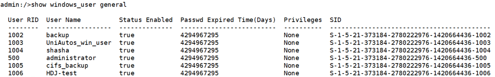

When a CIFS share is used for restoration, if the user to which the original copy file belongs does not exist in the target storage for restoration, the permissions of the user cannot be restored. If you want to restore user permissions, ensure that the target storage for restoration has a user with the same SID or user ID as the original copy file. The following uses Dorado V6 as an example to describe how to query the SID or user ID. For details about query methods of other products, contact technical support engineers.
Procedure
- Log in as user admin. If you are a Windows user, run the show windows_user general command to query the SID.

- Log in as user admin. If you are a Linux user, run the show unix_user general command to query the user ID.